GeoInv3D · joint gravity–magnetic inversion · synthetic test
Three bodies with the same density contrast (+0.3 g/cc) and different susceptibility: A strongly magnetic (0.05 SI), B weakly (0.01 SI), C not at all. Can a joint inversion tell them apart, and which coupling of the density and susceptibility models helps? Six couplings are compared on the same data, first with block-shaped bodies, then with dipping intrusions.
Both models inverted together with one β, nothing linking them.
The models' gradients are parallel: boundaries coincide, values stay free.
The models change in the same places and are flat elsewhere.
One relation in every cell, here Δρ = 6χ (body A's ratio): a deliberately partial rule.
Each cell belongs to one rock unit; given the three true units, the best case for it.
Anomalies share their cells, with any sign or ratio; λ1 from the L-curve, λ2 = 0.3.
Three boxes at the same depth. The anomalies overlap little, so this is the easier case.
Open the interactive workflow 3D models against the true model, every run's data fit and settings
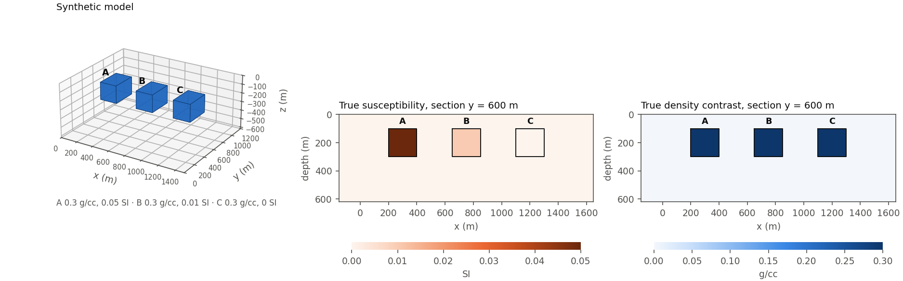
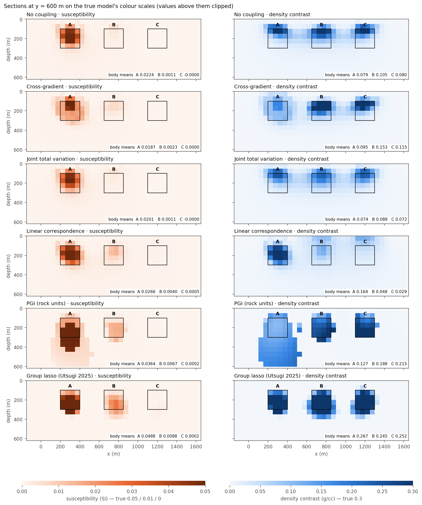
| Coupling | Body A | Body B | Body C | Δρ rms error | χ rms error | |Δρ| outside bodies | χ²/N grav / mag | s | |||
|---|---|---|---|---|---|---|---|---|---|---|---|
| Δρ | χ | Δρ | χ | Δρ | χ | ||||||
| True model | 0.300 | 0.0500 | 0.300 | 0.0100 | 0.300 | 0.0000 | 0 | 0 | 0 | 1 | |
| No coupling | 0.079 | 0.0224 | 0.105 | 0.0011 | 0.080 | -0.0000 | 0.0423 | 0.0034 | 0.0054 | 1.06 / 1.08 | 39 |
| Cross-gradient | 0.095 | 0.0187 | 0.153 | 0.0023 | 0.115 | 0.0000 | 0.0380 | 0.0036 | 0.0044 | 1.10 / 1.12 | 80 |
| Joint total variation | 0.074 | 0.0201 | 0.088 | 0.0011 | 0.072 | -0.0000 | 0.0421 | 0.0035 | 0.0057 | 1.06 / 1.08 | 66 |
| Linear correspondence | 0.164 | 0.0266 | 0.048 | 0.0040 | 0.029 | 0.0005 | 0.0420 | 0.0031 | 0.0062 | 1.08 / 1.09 | 64 |
| PGI | 0.127 | 0.0364 | 0.188 | 0.0067 | 0.215 | 0.0002 | 0.0436 | 0.0042 | 0.0092 | 0.37 / 0.45 | 40 |
| Group lasso | 0.267 | 0.0488 | 0.245 | 0.0088 | 0.252 | 0.0002 | 0.0342 | 0.0044 | 0.0015 | 1.07 / 1.22 | 181 |
Body means of the inverted models (Δρ in g/cc, χ in SI) over the cells inside each body; errors are the rms difference from the true model over the core of the mesh; the lowest of each is in bold. χ²/N near 1 fits the data to their noise. PGI put 48/96 of A's cells in unit A, 40/96 of B's in B, 70/96 of C's in C, and called 384 cells outside the bodies a body.
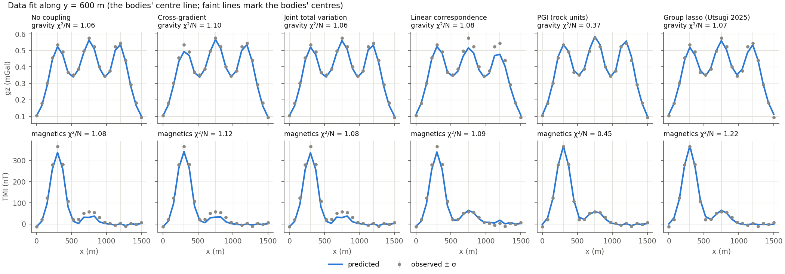
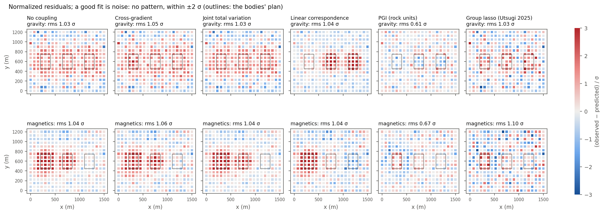
Blocks. Without coupling, L1–L2 recovers each body at about a third of its density contrast (0.08–0.11 of 0.3) and B's weak susceptibility barely at all (0.0011 of 0.01). The cross-gradient raises the densities to 0.10–0.15; the joint total variation leaves them about where they were. The group lasso recovers 80–90 % of every density contrast, both susceptibilities (0.049 and 0.009) and none in C, with the least density outside the bodies. The linear correspondence, told Δρ = 6χ everywhere, lowers C's density to 0.029 and gives it susceptibility it does not have; the magnetic residual map shows the misfit over C. PGI, given the exact rock units, raises the densities to 0.13–0.22 but fits the data to χ²/N 0.37 / 0.45 and puts a false dense zone under A.
The same three bodies as tabular intrusions dipping 55° to the east, reaching deeper.
Open the interactive workflow 3D models against the true model, every run's data fit and settings
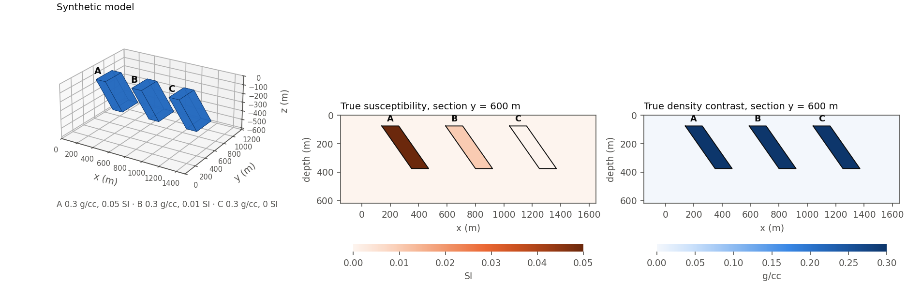
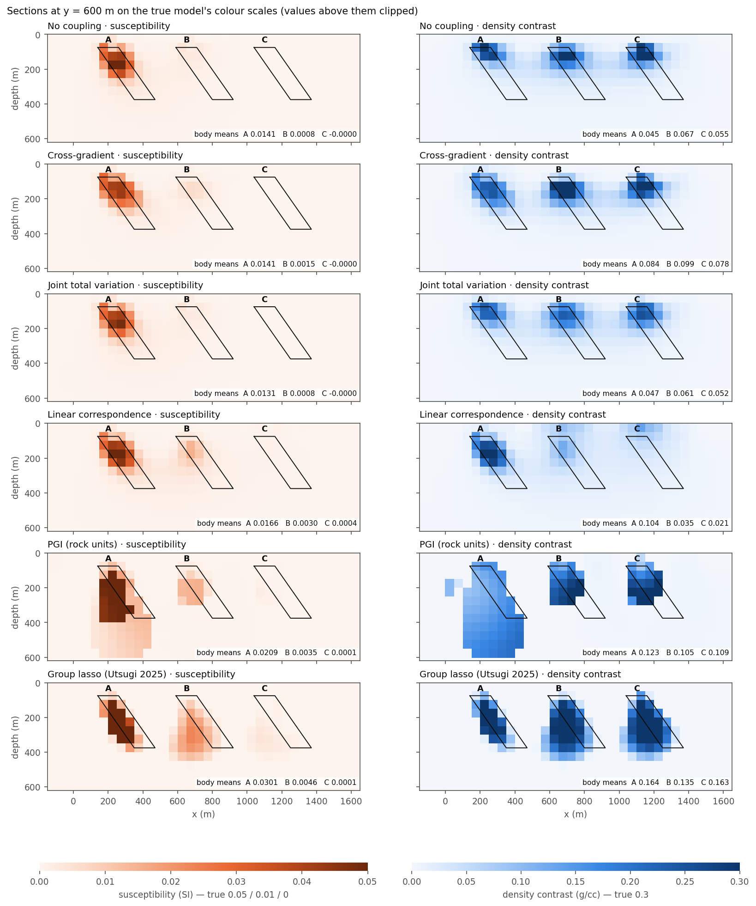
| Coupling | Body A | Body B | Body C | Δρ rms error | χ rms error | |Δρ| outside bodies | χ²/N grav / mag | s | |||
|---|---|---|---|---|---|---|---|---|---|---|---|
| Δρ | χ | Δρ | χ | Δρ | χ | ||||||
| True model | 0.300 | 0.0500 | 0.300 | 0.0100 | 0.300 | 0.0000 | 0 | 0 | 0 | 1 | |
| No coupling | 0.045 | 0.0141 | 0.067 | 0.0008 | 0.055 | -0.0000 | 0.0441 | 0.0039 | 0.0053 | 1.08 / 1.09 | 43 |
| Cross-gradient | 0.084 | 0.0141 | 0.099 | 0.0015 | 0.078 | -0.0000 | 0.0412 | 0.0039 | 0.0046 | 1.07 / 1.08 | 110 |
| Joint total variation | 0.047 | 0.0131 | 0.061 | 0.0008 | 0.052 | -0.0000 | 0.0434 | 0.0039 | 0.0054 | 1.08 / 1.09 | 106 |
| Linear correspondence | 0.104 | 0.0166 | 0.035 | 0.0030 | 0.021 | 0.0004 | 0.0427 | 0.0037 | 0.0058 | 1.06 / 1.08 | 107 |
| PGI | 0.123 | 0.0209 | 0.105 | 0.0035 | 0.109 | 0.0001 | 0.0493 | 0.0050 | 0.0091 | 0.52 / 0.95 | 30 |
| Group lasso | 0.164 | 0.0301 | 0.135 | 0.0046 | 0.163 | 0.0001 | 0.0451 | 0.0048 | 0.0040 | 1.08 / 1.23 | 222 |
Body means of the inverted models (Δρ in g/cc, χ in SI) over the cells inside each body; errors are the rms difference from the true model over the core of the mesh; the lowest of each is in bold. χ²/N near 1 fits the data to their noise. PGI put 18/84 of A's cells in unit A, 19/84 of B's in B, 33/84 of C's in C, and called 367 cells outside the bodies a body.
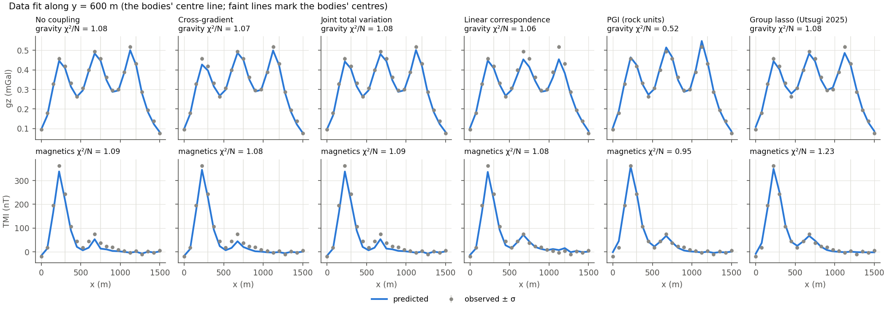
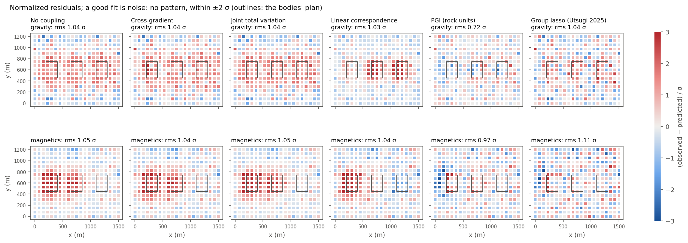
Dipping intrusions. Every method loses amplitude and some of the dip: the bodies reach 375 m and the data resolve their tops best. The group lasso still gives the highest densities (0.14–0.16 of 0.3) and follows A's dip in susceptibility; the cross-gradient raises the L1–L2 densities from 0.05–0.07 to 0.08–0.10. The linear correspondence again drags C's density down. PGI classifies fewer cells correctly than for the blocks (A 18, B 19, C 33 of 84).
The group lasso is an L1 + L2 regularization in which the L1 term acts on each cell's pair of values (density, susceptibility) instead of on each value alone. The pairing is the coupling. Three runs show what comes from where:
Run 2: L1 + L2
½‖b − Zζ‖² + λ1 Σk (|Δρk| + |χk|) + ½λ2‖ζ‖²
Run 3: group lasso
½‖b − Zζ‖² + λ1 Σk √(Δρk² + χk²) + ½λ2‖ζ‖²
Runs 1 and 2 have the same kind of regularization and differ in how it is solved; runs 2 and 3 are solved the same way and differ only in the pairing. Since the gravity data depend only on Δρ and the magnetic data only on χ, run 2 is two independent inversions; only the square root in run 3 ties the models together.
Every iteration of the ADMM solver does two things:
Runs 2 and 3 differ only in step 2:
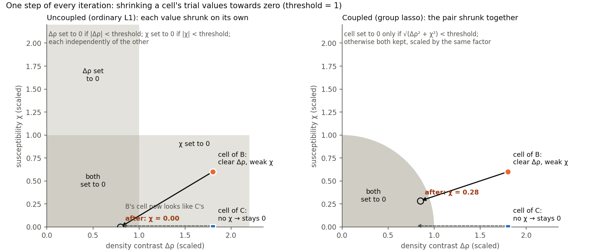
A cell of body B has a clear density and a weak susceptibility. In run 2 its weak susceptibility falls below the threshold and becomes zero, so the cell ends up looking like a cell of C. B's magnetic anomaly still has to be explained, and the few cells whose susceptibility does pass the threshold take it all: they end up at eight times the true value. In run 3 the cell is kept because of its density, and its susceptibility is kept with it: B's susceptibility spreads over its dense cells at about the right level.
A cell of body C has density but no magnetic signal, so its trial susceptibility is about zero in both runs and stays zero. The pairing does not create magnetization; it lets a weak one survive in cells that are active anyway.
| Shape | Run | Δρ A | Δρ B | Δρ C | χ A | χ B | χ C | χ²/N grav / mag |
|---|---|---|---|---|---|---|---|---|
| True | 0.300 | 0.300 | 0.300 | 0.0500 | 0.0100 | 0.0000 | 1 | |
| Blocks | 1. L1–L2, IRLS, no coupling | 0.079 | 0.105 | 0.080 | 0.0224 | 0.0011 | -0.0000 | 1.06 / 1.08 |
| Blocks | 2. L1 + L2, ADMM, no coupling | 0.247 | 0.233 | 0.251 | 0.0493 | 0.0092 | 0.0000 | 1.12 / 1.36 |
| Blocks | 3. Group lasso, ADMM | 0.267 | 0.245 | 0.252 | 0.0488 | 0.0088 | 0.0002 | 1.07 / 1.22 |
| Dipping | 1. L1–L2, IRLS, no coupling | 0.045 | 0.067 | 0.055 | 0.0141 | 0.0008 | -0.0000 | 1.08 / 1.09 |
| Dipping | 2. L1 + L2, ADMM, no coupling | 0.153 | 0.132 | 0.162 | 0.0289 | 0.0021 | 0.0000 | 1.12 / 1.34 |
| Dipping | 3. Group lasso, ADMM | 0.164 | 0.135 | 0.163 | 0.0301 | 0.0046 | 0.0001 | 1.08 / 1.23 |
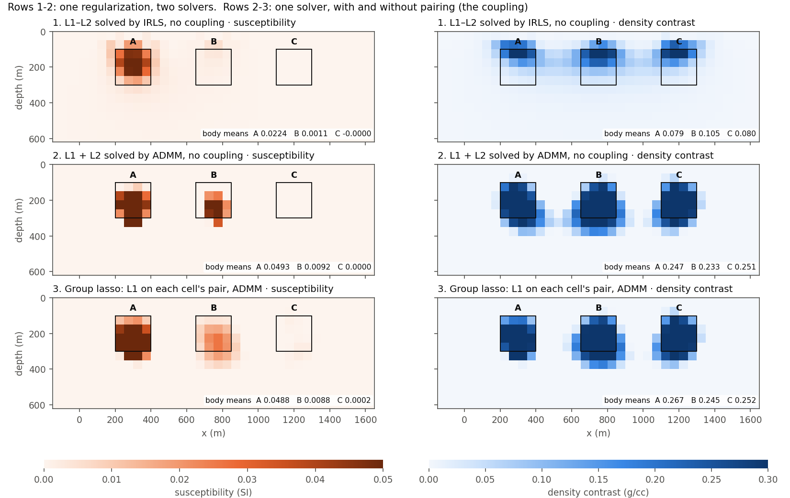
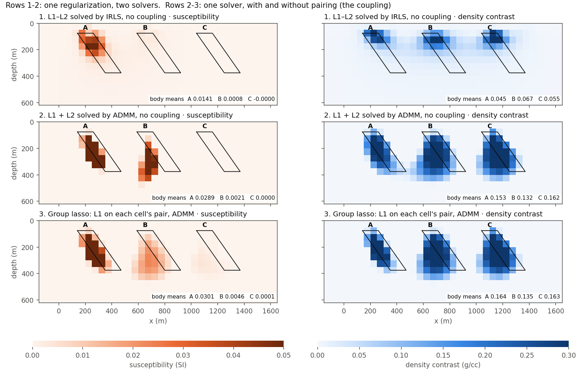
Runs 1 and 2: the solver. With the same kind of regularization and no coupling, the ADMM solution recovers 0.23–0.25 g/cc in the blocks against 0.08–0.11 for IRLS, and C, which has no magnetic signal to borrow, reaches 0.25 as well, so this gain does not come from coupling. ADMM finds the exact sparse solution (cells set exactly to zero), the sensitivity weighting 1/‖kj‖ offsets the decay of the kernels with depth, and λ1 comes from the L-curve; IRLS approximates the L1 norm by iterative reweighting with a smoothing threshold and weights the cells differently.
Runs 2 and 3: the pairing, which is the coupling. The effect described above, measured: in run 2, B's susceptibility survives in only a few cells, pushed to 0.083 SI (the truth is 0.01), and 60 % of B's dense cells have none. In run 3 it fills 95 % of them with a peak of 0.027 (dipping bodies: 18 % → 84 % of the dense cells, peak 0.038 → 0.018). The magnetic fit improves (χ²/N 1.22 against 1.36) and the densities gain up to 0.02. The pairing suits bodies whose magnetic parts are also dense, as here; it does not force a dense cell to be magnetic (C keeps χ ≈ 0) or the two properties to share a ratio or sign.
So each coupling is best judged against its own uncoupled run: the group lasso against run 2; the cross-gradient, the joint total variation and the linear correspondence against run 1.
With 20 IRLS cycles every L1–L2 run stopped at the limit before converging. With 40, the uncoupled run and the joint total variation converge and their densities rise by 60–85 %; the cross-gradient gains most from the extra cycles, and it and the linear correspondence still run to the limit, so more cycles may raise them further. All results above use 40 cycles.
| Shape | Coupling | Δρ A / B / C, 20 IRLS cycles | Δρ A / B / C, 40 cycles | 40 cycles ended by |
|---|---|---|---|---|
| Blocks | No coupling | 0.046 / 0.059 / 0.047 | 0.079 / 0.105 / 0.080 | converged |
| Blocks | Cross-gradient | 0.067 / 0.062 / 0.049 | 0.095 / 0.153 / 0.115 | 40-cycle limit |
| Blocks | Joint total variation | 0.045 / 0.053 / 0.045 | 0.074 / 0.088 / 0.072 | converged |
| Blocks | Linear correspondence | 0.088 / 0.035 / 0.029 | 0.164 / 0.048 / 0.029 | 40-cycle limit |
| Dipping | No coupling | 0.028 / 0.037 / 0.030 | 0.045 / 0.067 / 0.055 | converged |
| Dipping | Cross-gradient | 0.046 / 0.039 / 0.031 | 0.084 / 0.099 / 0.078 | 40-cycle limit |
| Dipping | Joint total variation | 0.029 / 0.034 / 0.029 | 0.047 / 0.061 / 0.052 | converged |
| Dipping | Linear correspondence | 0.056 / 0.026 / 0.020 | 0.104 / 0.035 / 0.021 | 40-cycle limit |